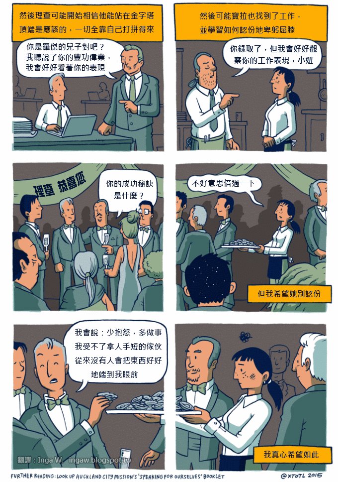

Hello World
CodeTengu Weekly 碼天狗週刊
CodeTengu Weekly 會在 GMT+8 時區的每個禮拜一早上 10:00 出刊，每一期會由三位不同的 curator 來負責當期的內容，每個 curator 有各自擅長的領域，如果你在這一期沒有看到自已感興趣的東西，可能下一期就會有了。你也可以瀏覽一下前幾期的內容。
目前的 curator 陣容：
- @vinta - I failed the Turing Test - 科幻迷，最近在讀 The Player of Games
- @saiday - Imnotyourson - 希望在離開台北之前可以見證到捷運禁止飲食廢止
- @tzangms - Oceanic / 人生海海 - 衝動型購物
- @fukuball - ImFukuball - 婚後生活
- @mingderwang - Ethereum enthusiast
- @kako0507 - 熱愛嘗試新事物的前端工程師
- @chiahsien - 新年新專案，好刺激啊！
- @hiroshiyui - 沒有人是一座孤島
- @uranusjr - Smaller Things - 不愛談技術的技術人，最近對做菜很有興趣
- @kkdai - 態度萬歲 - 喜歡 Golang 的略懂工程師，最近在學機器學習 (疑?)
- @yhsiang
你也可以關注我們的 Facebook、Twitter、GitHub 或微博，有很多 Weekly 看不到的內容。有任何建議或疑問也可以來 Gitter 聊聊，歡迎亂入。
 @vinta
@vinta
Best Practices for Building a Microservice Architecture
跟作者的另一篇文章 Best Practices for Designing a Pragmatic RESTful API 一樣，列舉了很多非常值得遵循的最佳實踐。而且不像其他講 Microservice 的文章，其實不需要一上來就跟讀者吼一堆 Domain-Driven Design (DDD) 的術語也是可以把很多重要概念講得很清楚的嘛，不過當然缺點就是篇幅稍微長了一點。基本上就是精華版的 Building Microservices。
不過說到底，在把 Monolith 改造成 Microservice 之前，其實你應該得先有一個「高內聚、低耦合」的 Monolith 才行啊，不然事情只會變得更複雜。
MySQL 5.6 Reference Manual - InnoDB Locking and Transaction Model
上禮拜都在研究 MySQL 的 deadlock 問題，但是卻發現自己對這方面的理解不夠扎實，看了一些文章之後才發現其實還是官方的文件寫得最完整（這不是廢話嗎？！）。大家有空也研究研究，不要讓別人笑我們不懂資料庫。雖然說 lock 的實作也只是冰山一角就是了。
Handling Unicode Strings in Python
說到 unicode 應該是很多 Python Developers 心中永遠的痛，讀了這篇文章應該可以稍微緩解一點。作者不像其他的 unicode 科普文那樣，他沒有講太多其實你根本也不想知道或是看不懂的 unicode 標準的前世今生和實作細節（當然還有那些和你的 OS 有關的眉眉角角）。好吧，不過至少你讀完就會知道什麼時候該用 .encode() 什麼要用 .decode() 了。
Become a pdb power-user
雖然在 Issue 2 也有分享過 pdb，但是這篇文章介紹得更詳盡，例如 .pdbrc 這個用法我還是看了文章才知道，值得再分享一次。而且因為前陣子面試了一些 Python Developers，卻發現用過或是聽過 pdb 的人比我想像中要少得多，正所謂「工欲善其事，必先利其器」啊諸君。
延伸閱讀：
Dev Tips - Chrome DevTools Tips by Umar Hansa
這個網站的作者每個禮拜會發布一則 DevTools 的實用小技巧（而且會把使用方式做成 GIF 圖！幹人也太好！），一直有聽說 Chrome 的 DevTools 很強，但是直到看了這個網站之後才真的知道 DevTools 究竟有多強，嚇到尿褲子了。不過有些新一點的功能可能只有在 Chrome Canary 才會出現。這裡列了幾個我真心覺得實用的小技巧，大家感受一下：
- https://umaar.com/dev-tips/15-dollar-zero/
- https://umaar.com/dev-tips/31-get-debug-event-listeners/
- https://umaar.com/dev-tips/53-console-trace/
- https://umaar.com/dev-tips/60-console-edit-html/
- https://umaar.com/dev-tips/95-resource-initiator/
- https://umaar.com/dev-tips/104-quick-source/
- https://umaar.com/dev-tips/115-manage-network-response-headers/
- https://umaar.com/dev-tips/117-inspect-function-scope/
有時候還真的有點羨慕前端工程師啊，竟然有像 DevTools 這麼棒的工具可以用，但是轉頭一看 JavaScript，嗯，好吧，上帝可能還是公平的。

罗辑思维 - 即将到来的阶层社会
因為 Issue 75 正好是 CodeTengu Weekly 在 2017 年的第一期內容，不免俗地要跟大家說聲新年快樂！說幾句吉祥話，祝福大家在新的一年裡不要再對自己有不切實際的期望了，如果用著一樣的心態，你在 2016 年做不好的事情到了 2017 年多半也還是做不好。衷心地希望各位可以早點接受自己所在的階級位置然後心安理得地活下去。就像是那個你每天汲汲營營追求的夢想中的生活，對某個上層階級的小孩來說他不費吹灰之力就能得到，而你卻還覺得這一切只是因為你不夠努力。
延伸閱讀：
最後，順道一提，CodeTengu Weekly 接下來會休刊四個禮拜，不過也可能更久。
 @saiday
@saiday
Your Git Log Should Tell A Story
有時候光是看到好的 commit message，連 diff 都不想看就想 merge 了！
commit message 不應該是 murmur 而應該是跟另一個人講事情，就算只有自己一個人在做。半年後的你 (還沒有放棄的話 (不能加這種附註吧) ) 會感謝自己的。
Behind the Scenes of iOS Security
這是 Apple 的安全架構師 Ivan Krstić 在 Black Hat conference 的 talk，深度地介紹了 iOS 的安全機制跟實作方法，看完之後有種肅然起敬的感覺。
- Hardened WebKit JIT Mapping
iOS 10 的新特性，JavaScript 編譯出來放在記憶體一個設定成只能執行不能讀寫的地方，這讓同一個 process 也沒辦法讀跟改最後執行的版本。 - Secure Enclave Processor
有指紋辨識的 iPhone 就會有 SEP，SEP 是一個獨立的硬體跟軟體用來管理你的登入資訊 (指紋、passcode)，不僅如此，他還介紹了從裝置開機到解鎖到再鎖起來相關的 key 的產生、派發跟儲存。 - Synchronizing Secrets
HomeKit、Apple Watch 的 Auto Unlock、iCloud photos 同步的安全系統，聽起來是滴水不漏，甚至為了安全性不惜自斷經脈將系統的實體 admin cards 用強力攪拌機粉碎了(?!)，也就是說之後這個系統若要更新，所有裝置都必須做軟體升級。
另外，Cloud Key Vault 在 server side 也是用專用的硬體機制隔離，就像是上面提到的 Secure Enclave 在我們的 iOS 裝置上的那樣。
關於把 admin cards 粉碎的解釋：
"Why do we take this last step that's extremely unusual? We go to great lengths to engineer the security systems to provide trust. When data leaves the device, the stakes are even higher. We need to maintain that trust. If we keep possession of those admin cards, there's the possibility that's not true. That's how seriously we take our mission about user data."
Make an android custom view, publish and open source.
Android 自定義 view 的實作跟設計，還包含了將 library 加入到 JCenter 的詳細解說。
這是一篇給有心想開源視覺元件的人很好的參考文。
 @fukuball
@fukuball
A framework agnostic PHP library to build chat bots - 一個打十個的訊息機器人開發 PHP 套件
PHP：初級
訊息機器人這樣的服務相信大家都不陌生，近期這樣的服務又慢慢火熱起來浮上檯面，可能因為天時、地利、人和，又可能是因為 ChatOps、AI、Deep Learning on NLP 的發展等等因素，我不知道，我不是趨勢專家，所以什麼原因我們就不要去深究了！但我相信大家在工作上多少會有開發訊息機器人的需求，甚至有些開發者問你有沒有寫過訊息機器人，如果回答沒寫過那就太遜啦～
mpociot/botman 這個 PHP 套件可以讓 PHP 開發者用同一套寫法來串接各個訊息平台，包含 Slack、Telegram、Microsoft Bot Framework、Nexmo、HipChat 及 Facebook Messenger（不過沒有 Line 及微信，沒辦法，西方高階種族不用這些），幾乎所有知名的訊息平台都可以串接了，所以才號稱一個打十個啊！大家自己玩玩看吧！
The major advancements in Deep Learning in 2016 - Deep Learning 在 2016 的大躍進
Deep Learning：中級
相信大家一開始接觸 Machine Learning 及 Deep Learning 一定都是從監督式學習開始，非監督式學習在這個領域一直都是一個較為進階的問題，而 Deep Learning 在 2016 的大躍進主要就是非監督式學習 GAN 的發展（Generative Adversarial Networks 生成式對抗網路），主要概念就是 generator (G) 會透過 discriminator (D) 漸漸改進他的效果，而這個過程不需要人類標示來評估，像這樣的模型可以用在語意理解、自然語言處理、為文字產生圖片、為圖片產生文字等等應用。
這篇文章算是對 Deep Learning 在 2016 大躍進的一個總結，其中 Open AI 這樣還 A.I. 於民的非營利組織及越來越活絡的 A.I. 社群似乎也揭示了未來 A.I. is new energy。
Finding the genre of a song with Deep Learning - 使用 Deep Learning 辨識音樂風格
Deep Learning：中級
本篇文章展示了如何使用 Deep Learning 來辨識音樂風格，其實有時使用 Deep Learning 的哪個算法可能不是重點，由於音樂是一個時間序列，且長短不一，了解這個特性將資料轉換成可以用來訓練的形式反而是關鍵。這裡的作法就是先將音訊轉換成頻譜之後，產生頻譜圖再切成固定大小的圖片，使用頻譜圖片特徵來進行訓練，預測時再用各個小段落的預測結果投票產出一首歌的音樂風格預測。作者也將原始碼分享出來了，大家有興趣可以去 GitHub 載來玩玩看。
The Great A.I. Awakening - A.I. 的覺醒
Artificial Intelligence：初級
這篇刊在 The New York Times 的文章介紹了 Google 在 A.I. 領域 - 特別是 Google Translate 的發展，類神經網路在近幾年成果豐碩，A.I. 也在這樣的成果中從幾十年的黑暗中看到了曙光，雖然這些成果在人類想像中的 A.I. 還只是弱人工智慧，但或許人類正在喚醒 A.I. 中。大家可以把這篇文章當成是科幻小說的序章在閒暇時看看吧～
手把手的深度學習實務
Machine Learning、Deep Learning：中級
台灣資料科學年會舉辦的手把手系列真的質量都蠻高的，今天再跟大家分享一下手把手的深度學習實務，這份簡報非常詳細，使用 Kaggle 上的 Predict'em All 資料集帶著大家一步一步使用深度學習練習訓練出一個有效的預測模型，如果想要趕快上手深度學習，這是一個很棒的捷徑！
目前這門課程一月也有開，大家有興趣可以去報名！（這不是廣告啦，單純就是我覺得很值得分享給大家）
 @mingderwang
@mingderwang
Why are suicides used in contract programming?
誰說在 blockchain 上寫一個 "Smart Contract" 就永遠不會消失，那你就被騙了。該合約還是有可能被刪除的，也就是合約有可能因此終止。在 Solidity 101 教學裡就有提到方法，就是 call suicide() 這個 function，但後來改用 selfdestruct()，怕用 suicide (自殺) 大家有可能聯想到傷心事。Anyway，這討論有提到它的用途，也有提到它的缺點。記得不要把錢往已經中止的合約送，那就有去無回了！
Testing API Examples with Dredd
一個適用多種語言的 API 測試 framework，Dredd。目前可以測 Go、Node.js、PHP、Python、Ruby、以及 Perl 所開發出來的 API 程式。且支援用 api blueprint 或 swagger 定義出來的格式。也就是說，不管你用哪一種語言開發 API backend，要先從定義 API 開始，但不是用 word 文件來寫 API 規格，而是用 apiary editor 或 swagger editor 的線上方式直接撰寫，就可以邊寫邊產出 API 的互動畫面。有了 apiary.apib 或 swagger 的 yml 檔，就可以用 Dredd 直接測試，最後再跟 Jenkins 或其他 CI 整合，真是一個非常理想的開發 API backend 的流程。 本文用 Python 跟 Node.js 當範例，簡單的做了個示範，希望能挑起你使用 Dredd 做 API 自動化測試的興趣。
 @kako0507
@kako0507
Code-splitting your way to better perf with Webpack
在使用 webpack bundle JavaScript 時有可能會產生過大的檔案，這個短短六分鐘的影片介紹 Webpack 的 code splitting (Lazy loading) 的一些小技巧：
- CommonsChunkPlugin: 將一些共用的 module 提取出，產生 common bundle file。
- AggressiveSplittingPlugin (for HTTP/2): HTTP/2 下每個 request 都是同一個 TCP 連線，所以靠減少 requests 這個目前還算主流的網頁最佳化方式反而會造成反效果，這個 plugin 可以用來切割 bundle file 成多個較小的 chunks 來增進快取的效率。
Tail call optimization (TCO) in Node v6
Node.js v6 支援了 Tail call optimization (TCO) ，因為在 Tail call 執行後 caller 已不需要執行任何指令，在 tail call 前即不須保留 stack，所以就不會產生 stack overflow 的問題。
 @chiahsien
@chiahsien
fantastic-ios-architecture: Better ways to structure apps
開發 iOS 這麼多年了，越來越感受到架構的重要性，尤其是當產品越長越大的時候，更能體會「好的架構帶你上天堂」這句話的辛酸血淚。新年第一波就為各位帶來滿滿的架構大禮包，祝福各位在新的一年能夠準時下班、荷包滿滿！
 @uranusjr
@uranusjr
The ‘Say Thanks’ Project
偶爾會在 Email、Twitter、其他 SNS 收到、甚至當面跟我說欸你是那個什麼什麼的作者，那個超棒的！謝謝你！之類的話。雖然會做軟體玩社群辦活動之類的也不是想得到什麼回饋，但是這種時候真是超級開心的啦。 >///<
然後就會想，其實大家都是這樣吧。我這麼喜歡他做的工具，如果能對他說聲謝謝一定很棒！如果你喜歡某個專案，趕快上去說聲謝謝！如果你是專案作者，那就快把這個按鈕放上你的專案，好讓我謝謝你！！
[](https://saythanks.io/to/<username>)
感謝 Kenneth 帶來這麼棒的服務。✨🍰✨
The .zip file specification is flawed
Node 的 ZIP 解壓縮函式庫 yauzl 收到下面的 bug report：
我在解壓縮一個使用者上傳的 zip 檔時遇到問題。我試過的所有程式都打得開這個檔案。下面是錯誤訊息：
Error: invalid comment length. expected: 12298. found: 0 at /usr/src/app/node_modules/yauzl/index.js:125:25 at /usr/src/app/node_modules/yauzl/index.js:539:5 at /usr/src/app/node_modules/fd-slicer/index.js:32:7 at FSReqWrap.wrapper [as oncomplete] (fs.js:681:17)如果我把拋出錯誤的 index.js 第 25 行註解掉，檔案似乎就能正常解壓縮。有想法嗎？
在短暫的訊息交換後，作者給了一篇破千字的解釋，從 ZIP 標準開始談起，描述其中對 magic number 位置定義的問題、實作如何處理這個問題、使用者檔案中包含特殊格式而觸發的 bug、一直到可行的解決方案。這同時是對 ZIP 檔案結構的基本介紹，提醒制定標準時需要注意的事情，也描述了各實作方對模糊標準的不同處理風格，當小故事看也十分有趣。
Intro to the 8-Point Grid System
作者介紹了一個排列 UI 元件的基本準則：八點系統，也就是把所有 UI 上的尺寸都做成 8 pt 的整數倍。這會讓你的 UI 看起來更一致，被縮放時（不論你自己或客戶端的設備）也會更準確。
我一直都在做 UI 的時候把單位做成 8 的倍數（偶爾在小區域用 4），但從來沒想過背後的道理，只是做久了就直覺認為這樣特別方便，畫面上的東西很容易對齊。原來這有個專門的稱呼，還被系統化了啊。推薦給大家。
Grace Hopper and the psychological drain on the gender minority
作者單槍匹馬參加 Grace Hopper Celebration of Women in Computing 後，寫下了一些感想。
一點 context：Grace Hopper Celebration of Women in Computing 是世界最大的科技界女性集會，會議名稱來自世界上第一批電腦工程師之一、COBOL 創造人，美國海軍准將 Grace Hopper。會眾幾乎都是女性，而作者（直男）一個人去參加，嗯⋯⋯。
我對文中提到的一點特別感同身受：當你與眾不同的時候，那種沒辦法融入、讓你懷疑自己不屬於這裡的感受，是最難熬的情緒。作者在會議最後溜出 closing party 思考他在會議中的經歷，這個舉動就說明了很多。我不知道大家有沒有這種經驗，但我完全能從自身經歷 reflect 他的感受。雖然非常讓人討厭，但也很重要的體驗。
 @kkdai
@kkdai
如何成为一名人工智能产品经理？
這篇文章主要介紹做一個 AI (ML) 的 PM 與一般軟體（或是服務）的差別在哪裡，如何做好一個?
也會一並建議如何自我進修的部分．
引用 Andrew Ng 的一段話：
「对我而言，无论何时，当我觉得我不知道下一步应该如何做的时候，
我将会尝试大量的学习和阅读，和某些领域的专家谈话。我不知道我们
的大脑是如何工作的，但它非常的神奇：当你读了足够多的书，或者和
足够多的专家谈话之后，换句话说，当你的大脑有了足够多的输入信
息，新的想法就会随之产生。」
The 12 Factors of Go
12FA (12 factor app) 是 heroku 提出建制 modern app 的方法論。
這篇作者試著用 Go 與 Docker 來實作並且寫了一本書。
fern4lvarez/piladb: Lightweight RESTful database engine based on stack data structures
piladb (pila: 就是西班牙文的 stack): PilaDB 是一個輕量化的 RESTful DB ，並且提供 stack structure 的架構，也就是說你可以透過 Push/Pop 來存取資料．
Infrastructure for Deep Learning
OpenAI（一個提供平台給大家做 AI 練習的公司) 公佈了他們的基礎架構，一個基於 Kubernetes 所部署出來的分散式的 Tensorflow ．
這篇文章除了介紹 Tensorflow 之外，也介紹了一個透過 Deep Learning 完成的範例． 其中系統架構是透過 Kubernetes 加上分散式的 Tensorflow cluster ，並且透過 Kubernetes-ec2-autoscaler 來做到機器的 Auto-Scaling ．
Why Red Hat makes more money on Docker than Docker does
"Red Hat 透過 Docker 賺的錢，比 Docker 自己都還要多"
這篇章從商業的角度上來探討為何 Docker 很難賺到錢，相反的身為系統服務商 Red Hat 卻透過 OpenShift 賺進大筆的鈔票 ($2 billion in annual revenue )．
本文中認為 OpenShift 其實在內容上跟 Docker Datacenter 的服務並沒有太大差異，而 Red Hat 憑著是良好的 Docker Container 的運作熟悉度 ( BTW: Redhat 是第二大的 Docker open source 的貢獻者) 搭配著 Kubernetes 在底層的服務就賺進了大筆的器業服務與諮詢費．
常跟幾個商業夥伴在笑說，Red Hat 的服務費是很貴，那是因為當以要找他的時候，就是你需要服務( 解 Bug ) 的時候．所以就像是軟體服（ㄌ ㄜ ）務（ㄙ ㄨ ㄛ \/ ) 費一樣．
geohot/lolrecaptcha: We try to break the recaptcha for the Merry Christmas for all!
喬治·霍茲 (geohot) 是美國的知名駭客，目前在 Google 的 Zero Project 團隊中專門發現所謂的 Zero-Day Bug.
之前比較知名的事件就是他是第一個破解 iOS 跟 PS3 的人，並且也開源了 comma.ai．
在聖誕節前夕，他忽然想來學 Golang，於是就把 recaptcha (Google 開發的是否是機器人的判斷器) 破解了．
快來看看他怎麼破解的..